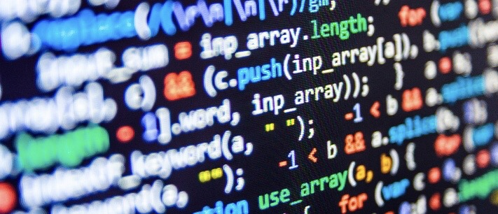

Formacion Academica
Preparatoria
Centro de Bachillerato Tecnológico Industrial y de Servicios No.253
Generacion:2018-2021
Promedio:9.7
Constancias: Reconocimientos de mejor promedio
Secundaria
Secundaria Técnica No.2
Generacion:2015-2018
Promedio:9.5
Constancias: Reconocimientos de mejor promedio
Primaria
Primaria 8 de octubre
Generacion:2009-2015
Promedio:10
Constancias: Diplomas de mejor promedio
Kinder
Kinder 8 de octubre
Generacion:2007-2009
Promedio:10
Contancias:Reconocimiento de promedio
Lo que estudio actualmente
Actualmente soy pasante en la carrera técnica en programación, estoy en esta carrera por en mi primer opción estaba alimentos y bebidas pero cuando me entregaron mis resultados había quedado en el turno de la tarde y no quería estudiar en la tarde, y tuve la opción de pasarme al turno de la mañana pero en otra carrera entonces cuando hable con la persona encargada de mi cambio me pregunto a que otra carrera quería entrar y pues dije que a programación, entonces comencé esta carrera como ya dije anteriormente no era mi primera opción pero pues toma esta desicion y decidi terminarla.
Logros
Algunos logros que he tenido a lo largo de mi vida y me siento orgullosa de contarlos, son que pude representar a mi estado en una competencia nacional, aunque tambien lo represente en competencias estatales y municipales, pero la que mas me ha gustado y gracias a ella he tenido una gran experiencia es de la competencia nacional en la cual tuve la dicha de aun siendo mi primera competencia haber ganado una medalla para mi estado entre los muchos estados que competian contra el mio, el deporte en el que gane dicha medalla se llama Tiro Deportivo y la verdad es un gran deporte ya que te enseña mucha diciplina para poder practicarlo y mucha concentracion para poder lograr tus mejores marcas, gracias a este deporte tambien conoci muy buenos amigos y a un gran entrenador que siempre estuvo haciendo que de mi mayor esfuerzo para alcanzar todo mi talento, tambien me llevo a conocer otros lugares y conocer amigos de otros estados y hasta la fecha sigo teniendo contacto con muchos de ellos, lamentablemente no pude continuarlo porque tuve algunos problemas y tome la desicion de salirme. A lo largo de todos mis estudios tambien he tenido muchos logros ya que desde la primaria hasta actualmente la preparatoria he tenido demasiados reconocimientos y diplomas con respecto a mis promedios, ya que a lo largo de todos mis estudios he destacado por tener muy buenas calificaciones.
Curriculum Vitae

Programa PHP
Convertidor de tiempo